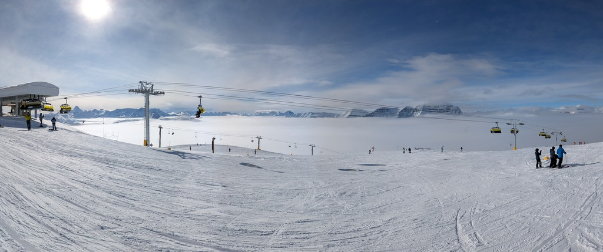
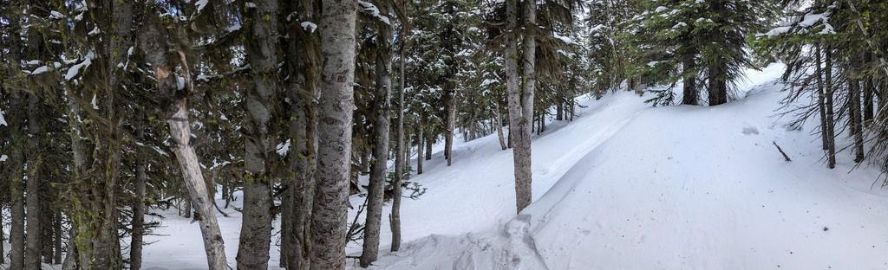

I hadn't been back to Banff in two years, so naturally I was nervous and excited to be back. It was nice to see that the strength was still there in the legs after a few days to build it back up again.

My skills improved considerably after the second day and I became a more efficient carver with the help of some fresh snow that came in around the same time. After the third day, we pushed past the aches and pains and I found my body adapted to it. We ate and slept well - "second breakfast" and a full nine hours of sleep (even when you can't sleep), all helped aid in the recovery.
I found myself more comfortable at steeper inclines; seems like the trick for me is to not look (too far) down and take my time to catch my breath. Being there on the edge felt like one of those life lessons: if you aren't pushing yourself in an uncomfortable or new situation, you aren't learning.
We went off with a group, and I learnt that you can always find ways to have fun when with people of different skill levels or preferences.
Skiing through trees is a lot of fun. Not many people seem to do it, so the snow is fresher, the air is warmer, and protected me from the wind. It was a pretty grand place to sit and take a break on the mountain.

After one of those long days, I've had to re-learn again that sleep deprivation causes my calfs to hurt - weird how I still keep forgetting that! Also, who would have known that Banff had surprisingly good ramen and it was glorious to end that day.